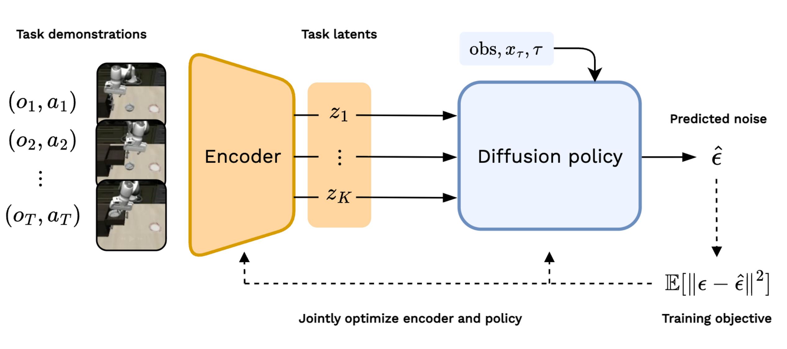
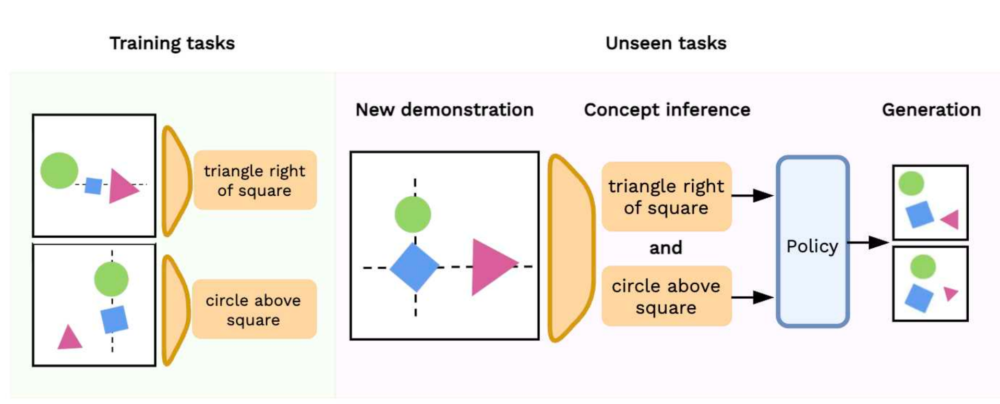
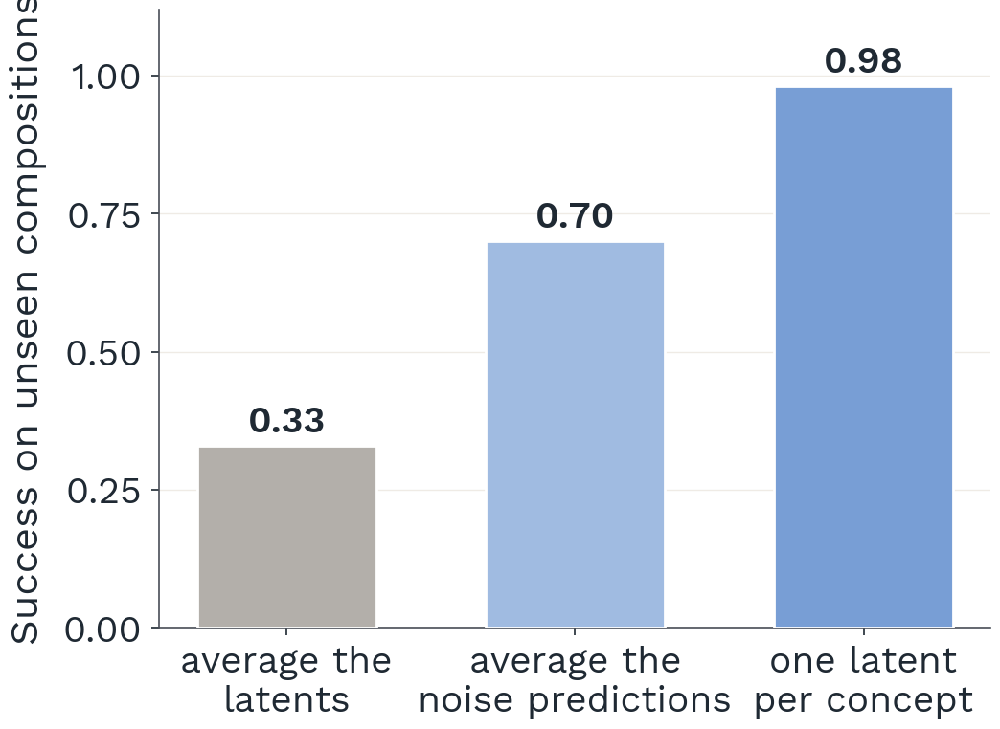
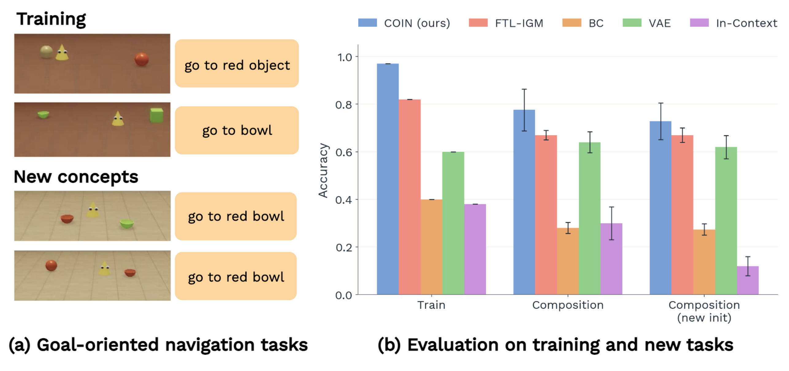
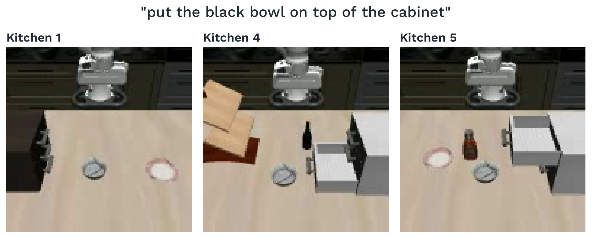
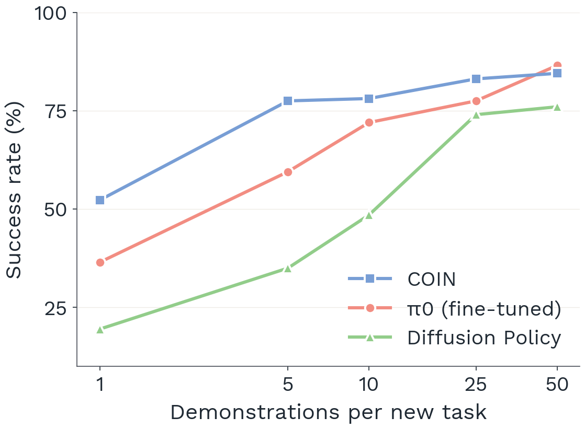
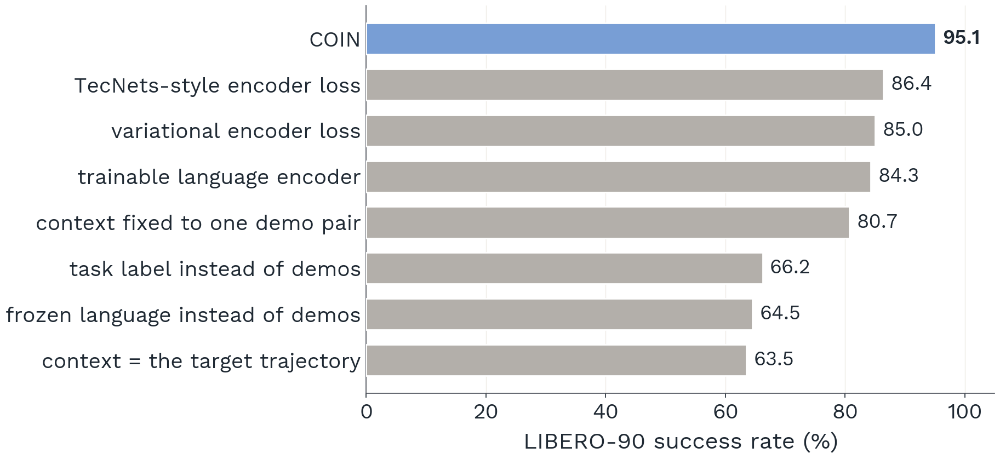

Few-shot Task Learning via Compositional Concept Inference
Harvard University
NeurIPS 2026
A robot that watches a few demonstrations, infers the concepts behind them, and composes those concepts into actions. The task representation is trained for one thing only: helping the robot act.
The idea
Humans learn a new task from a few demonstrations by inferring the concepts behind them, such as which object matters and where it should go, and recombining concepts they already know. COIN does the same. An encoder turns demonstrations into a small set of concept latents. A diffusion policy predicts one denoising direction per concept and adds them up, so concepts learned in separate tasks can be combined at test time. The encoder has no objective of its own: it is trained only through the policy's action loss, on demonstrations other than the one being imitated, so a latent is useful exactly to the extent that it helps the robot act.

Concepts compose
Train on single relations between objects, such as “triangle right of square” and “circle above square”. At test time, show COIN one demonstration of each relation: it infers one latent per concept and adds their predictions, producing arrangements that satisfy both relations although no training task ever combined them.

How the concepts are combined matters. Averaging the two latents into one conditioning vector mostly fails. Adding the two noise predictions works far better. Keeping each relation in its own latent makes composition nearly perfect, which is possible only because the encoder separated the two relations.

Concepts bind
In goal-oriented navigation, training tasks name one attribute of the target: “go to the red object”, “go to the bowl”. Held-out tasks need both at once, “go to the red bowl”, while a distractor shares one attribute with the target. Following either attribute alone fails. COIN infers the right binding from demonstrations and reaches the target, including from starting positions it never saw.

Robot manipulation
On the LIBERO benchmark, COIN is conditioned only on demonstrations. It receives no language instruction and no internet-scale pretraining, yet it matches large vision-language-action models with roughly seven times fewer parameters.
Choose a task
Same words, different task
“Put the black bowl on top of the cabinet” appears in several kitchens with different layouts. The sentence cannot say which one is meant; a demonstration can. On the tasks whose instruction is shared with other tasks, language-conditioned policies drop sharply, and COIN does not.

Learning a new task from one demonstration
Hold out ten tasks, then fine-tune on a single demonstration of each. COIN succeeds about half the time, far ahead of the same policy conditioned on language and of a fine-tuned π0, and the gap is widest when demonstrations are scarcest. What transfers is the policy's knowledge of how to act; what adapts is the mapping from demonstrations to concepts.

What makes it work
Three ingredients are each necessary: conditioning on demonstrations rather than a label or a sentence, sampling the context demonstration independently of the trajectory being imitated so the encoder cannot simply copy it, and training the encoder only through the policy's loss rather than with an objective of its own. Remove any one and success drops.

BibTeX
@inproceedings{ye2026coin,
title = {Few-shot Task Learning via Compositional Concept Inference},
author = {Ye, Hanming and Song, Yiding and Du, Yilun},
booktitle = {Advances in Neural Information Processing Systems},
year = {2026}
}